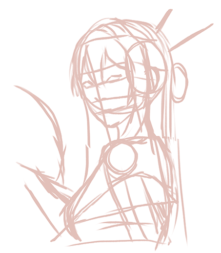
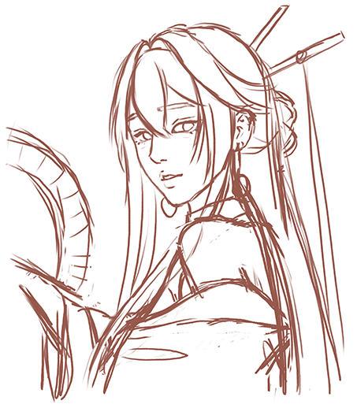
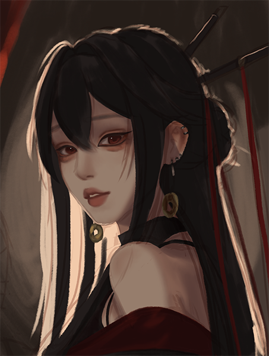
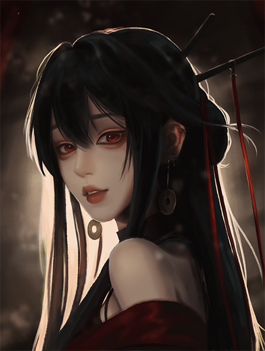

Presented by Rebloom Studio | Published May 6, 2026
A brief preview of the drawing process
Watch the full speedpaint in more detail
The Motivation
“That’s not right…and this isn’t right either…”
Those are words I often think to myself or mutter under my breath when I draw. Even during the periods when I drew regularly (take a look at some of those works here), I was rarely satisfied with an idea right away. I would often restart multiple times, whether I was refining the same pose and idea or scrapping it entirely in favor of something new.
Regardless of when I’m drawing, what I’m drawing, or for what purpose, I noticed that my drawing process remained largely unchanged, even as I try to ease myself back into it after burnout.
Recently, however, it has become increasingly difficult to draw consistently, and I have found myself dissatisfied with my current art style. Because of this, I began breaking down my own creative process step by step. By analyzing how I approach planning, sketching, refining, and finishing a piece, and comparing my process to those of artists I admire, I hope to better understand my strengths, identify areas for improvement, and continue growing as an artist.
My creative process can be broken down into three basic steps: the outline, base colors, and shading.
Outline
The outline step basically consists of planning and a rough sketch before I begin coloring my piece.
Many artists also have a lineart phase, or something resembling it, such as a clean sketch that shows up in their final product. However, I refuse to do lineart because I learned early on in my digital art journey that my hands are shaky and uncertain from years of chicken-scratch sketching, and I often dislike how it looks in my pieces.
That being said, there are exceptions where I do make a clean sketch resembling line art, but those are reserved for very simple pieces since it is faster and more efficient than rendering every piece, such as a graphic for assignments.
One day, I will learn how to make my lineart look as aesthetically pleasing as that of some popular Instagram artists such as Hanacue, Yueko, and Kuro.
Planning
Screenshot from Xiaohongshu by @久遇（约拍版), used as artistic reference
Whether I am looking for something to draw or already have an idea in mind, there is always some planning involved before I actually begin. Usually, that involves looking up one or more references on Pinterest, though it isn’t a great source these days because there are so many AI-generated images. I often find out that some photos are AI-modified a bit too late, once I realize details don’t make sense, like an extra finger.
Depending on my mood, I am either looking for one specific photo to draw in my style just for fun, or if I have a more concrete original idea, I look for several references and use a portion of each. Sometimes, if I can’t find a sufficient reference, I might take my own reference pictures, though I prefer not to, since it is difficult being both a model and a cameraman at once.
For this specific demonstration, I took a screenshot from a photoshoot video that I found quite aesthetically pleasing to draw. Nowadays, I find myself often feeling inspired by high quality photoshoot videos that can be found on Xiaohongshu (Rednote).
Initial Composition

The basic general guidelines of my drawing
This part is relatively straightforward.
It involves observing my references and using simple shapes and lines to map out the basic positioning of the body and facial features. Though it appears rough, it is important to make the guide's proportions accurate; a lot of time would be wasted making major changes afterward. Even for artists such as WLOP, who doesn’t make very detailed sketches, he can still be observed making a rough skeleton at the beginning of his speedpaints.
This is also a good stage to make several “thumbnails” if I am debating between different poses or ideas, since I can get a feel for each before truly committing. But since I am drawing directly from a reference, that didn’t apply to this drawing.
Sketching

The sketch, drawn with a darker color
Once I am satisfied with the skeleton, I use it to create a second sketch. During this step, I capture the facial features, hair, clothing, and other relevant parts in more detail.
Depending on the complexity of the drawing, several sketches may also be made, starting from rougher sketches to a refined one.
The same sketch may also be made on different layers in preparation for the coloring phase. I turn the sketch on and off as I start shading, so the illustration remains coherent without the sketch's overlay. Having different parts on different layers makes it easier for me to focus on one specific part at any given moment.
In this instance, I split the face and clothes into one layer, and the hair into another. Coloring aside, I can also modify overlapping areas (such as hair over fabric) more easily without worrying about altering the sketch more than desired.
Before I start coloring, like many artists, I set the sketch layer to “multiply” and color under it so it remains visible as I work. This is also the part where I decide how much of my sketch I actually want to complete. For this drawing, I cropped out a portion of the arm and torso to emphasize the girl's face instead.
Since my illustration is very reference-driven, choosing colors is much simpler than if I were making a more creative piece.
In this case, I picked colors that seemed fitting for each section. I usually stick to a desaturated color scheme by preference and add more color and saturation through shading. Of course, this might not apply to pieces meant to be brighter and more vivid.
For darker colors that look grey, I tend to choose a warm or cool grey, depending on the overall color scheme. Since the photo has more warm colors, such as red from the clothing and yellow lighting, I used a dark reddish-gray to preserve coherence. If I were to select a bluish-gray, although gray is a neutral color, it would look very blue and jarring next to the other colors (this is because of color context).
It is also worth noting that the grays that I chose look almost black in some instances, but I will almost never use pure black or pure white in my pieces. It limits flexibility and, in my opinion, can make a piece look uninteresting and flat if used for large portions of an artwork. For example, I can’t make pure white any “brighter” than it already is, or black “darker” than it already is. It is not necessarily wrong to use either, but I believe that it should be used sparingly. Of course, there are techniques that can be used that allows for the proper utilization of pure black and pure white in art.
A technique some artists use is to start in grayscale, focusing on the piece's values, then add color afterward, as observed in WLOP and Shal E.’s speedpaints. With the right composition and lighting, the final result can look breathtaking. I have tried this method a few times, but unfortunately, I lack the skill and experience to execute it properly
Picking colors for an original piece is far more complicated than going off a reference. If you are interested, I would recommend taking a look at "Guide to Color Picking" for a more in-depth explanation of my thought processes and practices for choosing base colors and shading colors.
Illustration with basic shading on skin and clothing
I tend to start shading the focal point of my illustrations first. For the most part, that would be the face. If the focal point were something else, such as a building, then I would likely start shading that first, since it helps “guide” the rest of the piece.
During this step, I added basic shading to the face and clothes. Because hair is more dynamic and usually starts as a rough block, I don’t add much shading to it until later, when the rest of the piece is more refined. This is just a preference, since many artists tend to do basic shading for the entire piece before moving on to more detailed shading.
Detailed Shading

Illustration with more detailed shading
Once the general shading is complete, I start doing more detailed shading for each section. All shading is still relatively rough, but contrast is often improved by darkening shadows and adding light.
I also added silhouettes of some minor details I had not included earlier, along with a rough outline of the background.
As I color and shade, I lower the sketch's opacity further, so I can shift to shading to define shapes and features rather than relying on the sketch.
Rendering
Rendered illustration
At this stage, I begin meticulously refining each shape. Oftentimes, some rough shading, such as the bright rim light on the girl, is not kept as is. Usually, those are placeholders, and I start coloring the final outline of the light on a separate layer and scrap the old one.
If there are multiple light sources, such as a yellow main light source and a blue ambient light source or a reflective light source, then hints of the blue are also added at this stage. To achieve this, I use the color dropper tool to pick the color of the area that I will color over, then shift the color wheel towards the desired color.
In terms of texture, I like to keep the shading on the face relatively smooth; the rest of the model will have rougher, less blended shading. This accounts for the skin's smoothness compared to the texture of other materials, such as fabric.
The rendering stage often takes the longest, since I am focused on perfecting each facet as much as possible and really transforming a work in progress into a fully completed work.
Finishing Touches

Complete final illustration
This stage is optional or relatively short, depending on the piece. Sometimes I stop at the previous stage if it is sufficient, but in certain cases I add additional texture, a color dodge layer if it is fitting (inspired by RossDraws), and any other minor adjustments.
Even though I presented my drawing process in a clear, consecutive order, the reality is much less linear. I often move back and forth between stages, such as changing the hues of certain colors or the shape of the face. In many ways, that process mirrors growth itself. Progress is rarely straightforward, and improvement often involves revisiting earlier stages rather than moving perfectly forward.
Through breaking down my artistic process, I realized that creating something imperfect is still more valuable than creating nothing at all. There is a common piece of advice that says, “Make it exist first. Make it better later.” That mindset applies not only to art, but to growth in general. Many of the pieces I now feel proud of once looked unfinished, awkward, or even ugly halfway through the process. However, by continuing instead of abandoning them, I was able to gradually improve them into something I was satisfied with.
This is something I continue to struggle with regarding burnout and my dissatisfaction with my current art style. When I constantly restart or quit midway because something does not immediately meet my expectations, I prevent myself from improving at all. By continuing to practice, experiment, and complete pieces despite frustration, I hope to eventually draw consistently again and find joy even amidst the imperfections.
Although this page focuses on my current process, both my workflow and artistic style will continue to evolve over time. Stay tuned for upcoming sections, where I will explore studies of artists I admire and experiment with new techniques.